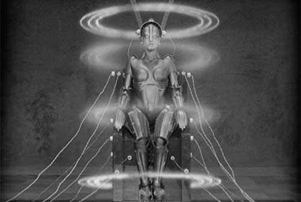

Robots de ficción
R2-D2
R2-D2 es un robot astromecánico y el amigo de C-3PO del universo de La Guerra de las Galaxias.
R2-D2 es un robot astromecánico y el amigo de C-3PO del universo de La Guerra de las Galaxias. Perteneció a la casa real de Naboo y sirvió al Rey Veruna durante su reinado. R2-D2 siempre estuvo alojado en la Nave Real de Naboo, de la misma manera que otros congéneres con la simple función de reparar cualquier parte de la nave y asistir como navegantes. R2-D2 pertenecía a un tipo de robots llamados Androides Astromecánicos y eran muy conocidos y queridos a lo largo de la galaxia.
Los sonidos y efectos vocales de R2-D2 fueron creados por Ben Burtt. R2-D2 fue diseñado artísticamente por Ralph McQuarrie, co-desarrollado por John Stears y construido por Tony Dyson.

Maria (Metropolis)
El robot María es una de las únicas imágenes robóticas de la ciencia ficción temprana. Aparece en Metropolis, una película de ciencia ficción producida en Alemania en 1927 y dirigida por Fritz Lang. Toda la película está dominada por la tecnología, con una mezcla de los años veinte y dispositivos futuristas.
La imagen de este robot femenino es una de las imágenes icónicas más potentes de la historia del cine.
Hal 9000
Hal 9000 es una supercomputadora ficticia que aparece en la serie Odisea espacial, iniciada con la novela 2001 una odisea del espacio escrita por Arthur C. Clarke en 1968. HAL es la computadora encargada de controlar las funciones vitales de la nave espacial Discovery, la inteligencia artificial cambia drásticamente su comportamiento a lo largo de la historia, está programado para no recibir respuestas que contengan dudas, lo que lo hace muy parecido al pensamiento humano; su programación consiste en cumplir sin objeciones los planes trazados, razón por la que elimina a los que dudan o son escépticos, considerándolos mecanismos fallidos.